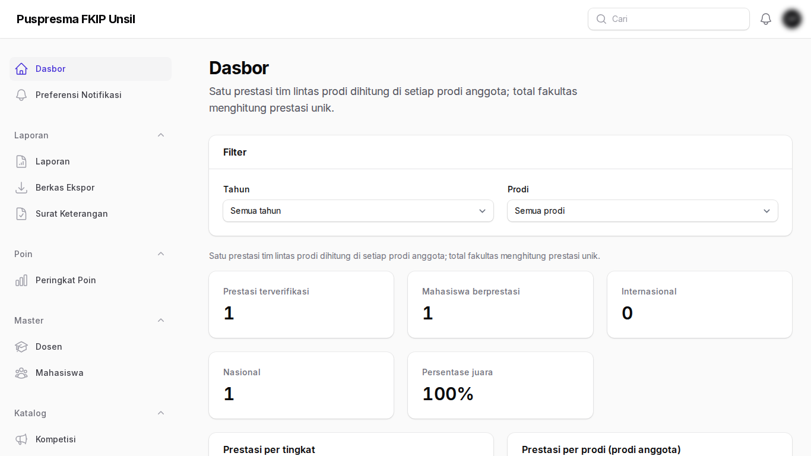
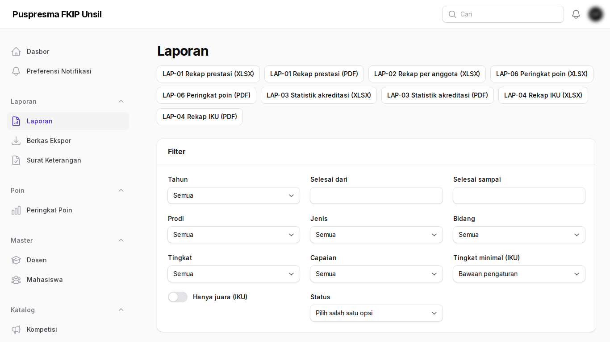
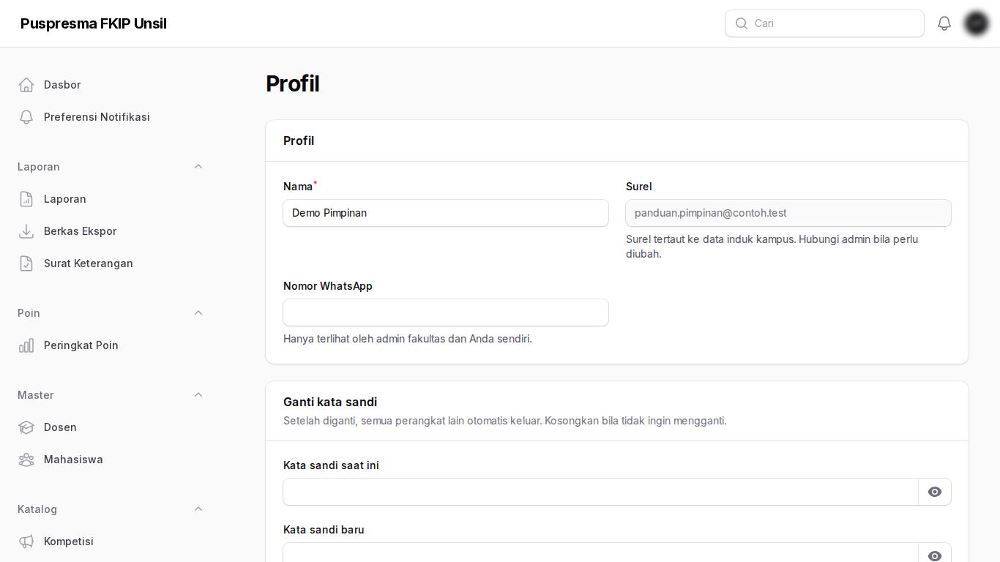
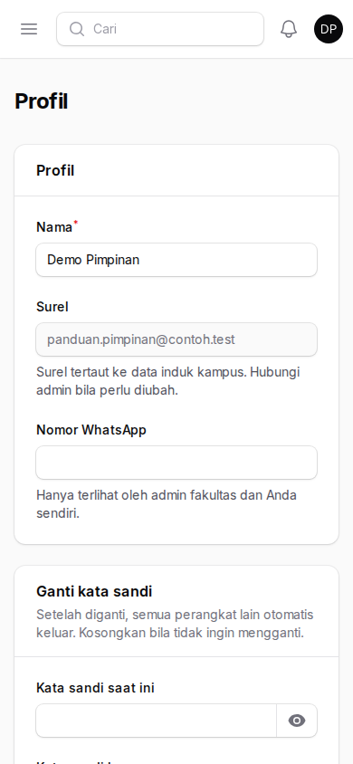

Tujuan
Memantau kinerja prestasi fakultas lewat dasbor dan laporan (akses baca).
Cara masuk
Masuk di panel Admin dengan akun pimpinan.
Buka Panel AdminLangkah-langkah
- Dasbor. Statistik prestasi fakultas dengan filter tahun dan prodi.

Dasbor - Laporan. Rekap prestasi, akreditasi, dan IKU dalam bentuk Excel.

Laporan - Profil dan kata sandi. Ubah nama dan nomor WhatsApp, atau ganti kata sandi (minimal 12 karakter, huruf dan angka). Begitu kata sandi diganti, semua perangkat lain otomatis keluar. Surel tidak dapat diubah di sini.

Profil dan kata sandi 
Tampilan di ponsel
Tanya-jawab
- Angka fakultas berbeda dengan jumlah per prodi.
- Total fakultas menghitung prestasi unik, sedangkan prestasi tim lintas prodi dihitung di setiap prodi anggota.
- Saya diarahkan ke halaman profil dan diminta mengganti kata sandi.
- Administrator mewajibkan penggantian kata sandi untuk akun Anda. Isi kata sandi saat ini dan kata sandi baru; setelah itu semua menu terbuka kembali.
- Saya lupa kata sandi.
- Pilih Lupa kata sandi di halaman masuk; tautan atur ulang dikirim ke surel akun Anda.